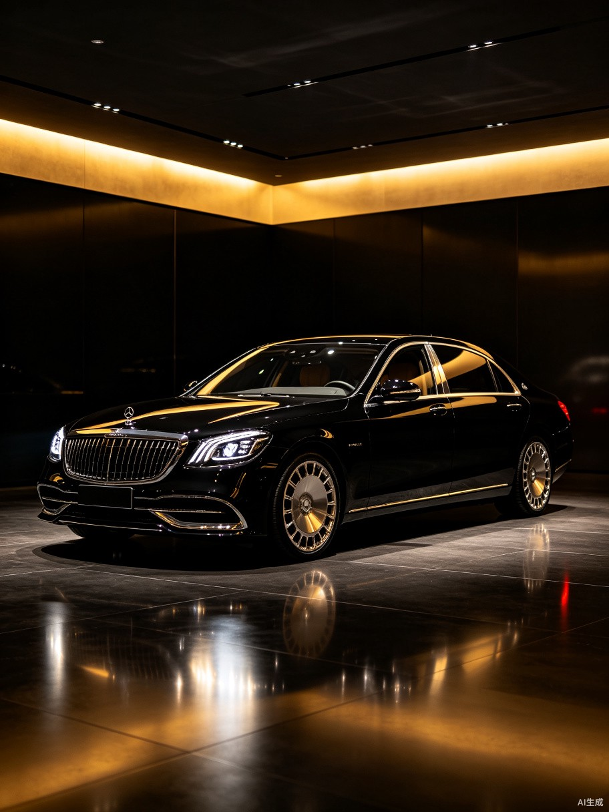
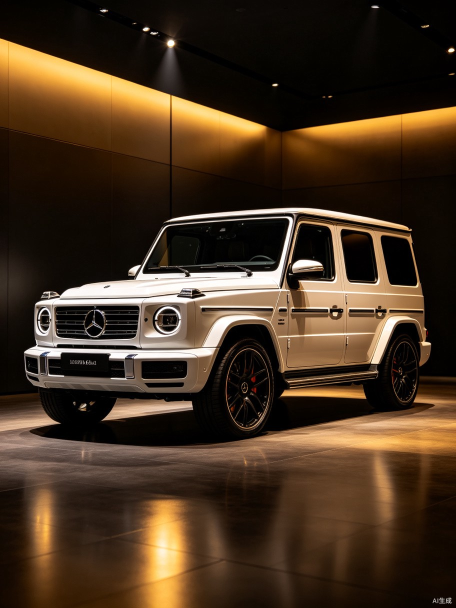
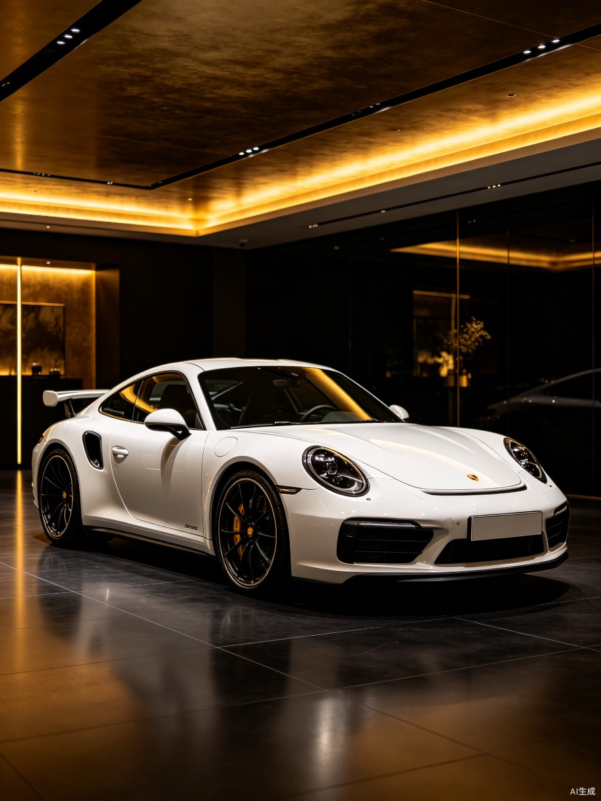
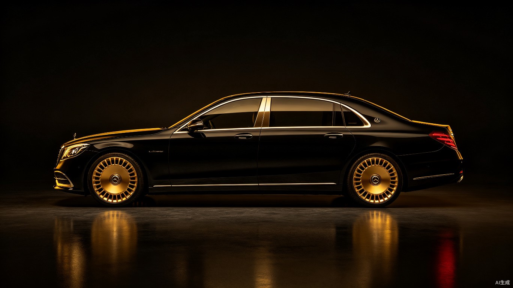
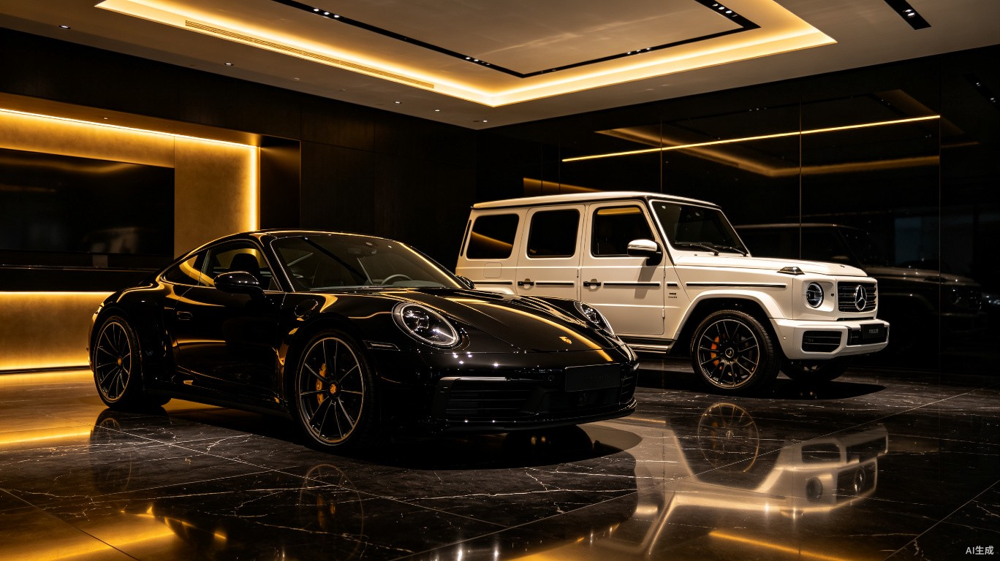

内容营销
156
已发布
5
待审核
89.2k
总曝光
待审核素材

迈巴赫 S680 新车品鉴
短视频 · 00:45

G63 AMG 越野实拍
图文 · 12张

保时捷 911 赛道日回顾
视频 · 03:22

劳斯莱斯 幻影内饰特写
图文 · 8张

上海旗舰店展厅全景
图文 · 6张
本周发布计划
周一
7/14
迈巴赫 S680 品鉴文章
周二
7/15
G63 AMG 越野专题
周三
7/16
保时捷 911 赛道日视频
周四
7/17
劳斯莱斯 幻影内饰故事
周五
7/18
展厅周报汇总